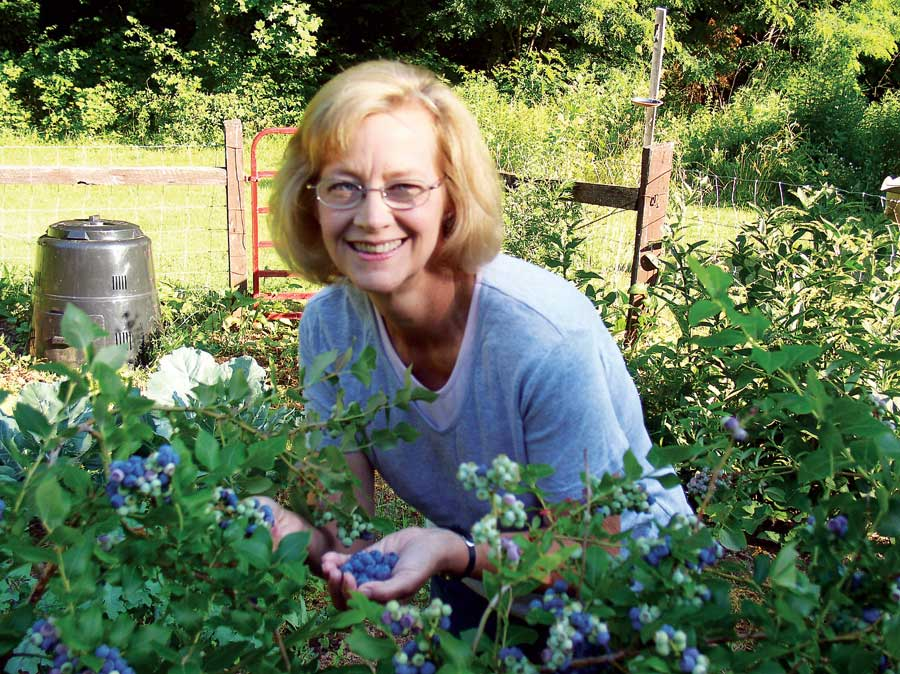

Growing Blueberries
Learn how to grow low-bush, highbush and rabbiteye blueberries, and find out where they grow best.
By Barbara Pleasant
June/July 2009
With the lowest soil pH requirement of all berries, blueberries grow in the same acidic conditions that please other native shrubs such as rhododendron and azaleas. When the pH goes too high, blueberries turn yellow because they’re unable to take up iron. Two or three foliar sprays with a kelp solution or iron-rich nettle tea, made a few days apart, will often bring plants back around, giving you time to heap on a fresh helping of an acidic mulch such as pine needles or pine bark. When growing blueberries in neutral soil, Uridel suggests amending the planting holes with plenty of acidic soil amendments like shredded pine bark, peat moss or leaf mold.
Northern gardeners will love thigh-high low-bush blueberries, which carry the flavor of their wild woodland ancestors. Lovely little plants to amass along a woodland edge, varieties such as ‘Polaris’ bloom so late that they’re rarely sabotaged by late freezes.
The type grown in most areas of the country, northern highbush blueberries are a cinch to slip into puddles of sun in an edible landscape, and once established the bushes bear for decades. Heavy-bearing varieties can produce more than 10 pounds of fruit per bush at maturity, but 8 pounds per plant is more realistic. The same is true of rabbiteye blueberries, which are much-improved versions of a native species of the Southeast, where they are hugely popular - and productive. The strongest producer, ‘Tifblue,’ has been known to produce more than 13 pounds per bush, but 6 to 7 pounds is typical of most rabbiteyes.
More Information on Blueberries
Preferred soil pH for northern blueberries is 4.5 to 5.5. Preferred soil pH for rabbiteye blueberries is 5.5 to 6.0.
View the blueberry types chart for details on the best varieties of blueberries, plus pros and cons of each, as well as information on where they grow best.
Find blueberry seeds and plants with our Seed and Plant Finder.
To learn how to use blueberries in your home landscape, check out the new book Landscaping with Fruit by Lee Reich (Tower, 2009).
See also:
- Growing Strawberries, Blueberries, Raspberries, Blackberries, Currants and Other Berries That Thrive Where You Live
- Blueberry Bonanza
 CINDY RUGGIERI Many blueberry varieties return a truly bountiful harvest. |
 BARBARA PLEASANT The author harvests homegrown sweet blueberries from her Virginia garden. |
|